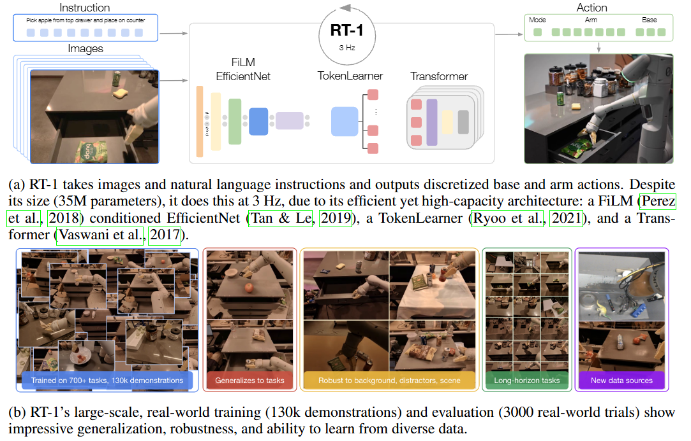
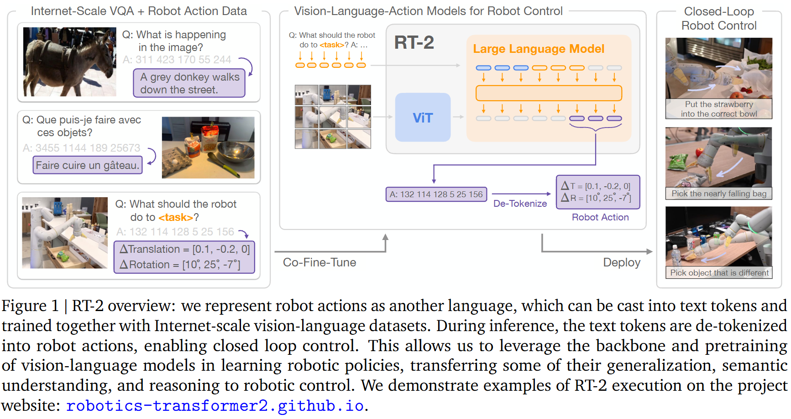
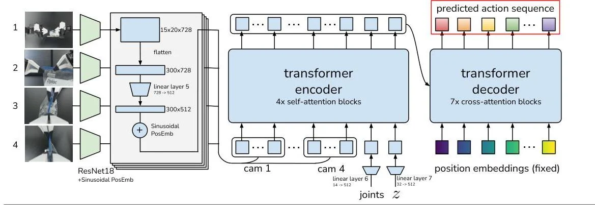

初入VLA
本文最后更新于 2026年8月7日 晚上
VLA入门指南
最近在学习VLA，开始从前几年的论文入手，先对VLA的整体概念有一个初步了解。总的来说是将Vision、Language和Action结合起来，形成一个统一的框架。VLA的目标是让机器人能够理解视觉信息、自然语言指令，并据此执行相应的动作。
1. 机器人算法的演变
看了大佬的blog之后对机器人算法的发展有了一定的认识。
1.1 基于规则符号
这个时期，主要是用离散的概念和规则描述机器人世界。
- 什么叫“符号方法”？
符号方法就是把现实世界转换成一些人能理解的离散概念。
例如机器人面前有一个箱子：
1 | |
然后人为规定一些动作:
1 | |
但是问题是：
符号规划本身只知道”抓箱子–> 放箱子“这个流程，并不能知道这个动作是怎么实现的，比如箱子的6D Pose，抓取位姿等，所以传统系统通常分为两层：
1 | |
例如：
1 | |
感觉跟我现在做的很像，原来我们做的这么传统😢
1.2 RL/模仿学习
到了这个阶段，就不需要人力把看到什么情况就做什么动作给编排完，由于这样很费人力并且不可能编排完所有情况，所以就引入了RL和模仿学习。其让机器人从数据或试错中学出一个策略函数。写成：
其中：
o
t
：机器人当前的 observation，观测；
a
t
：当前要执行的 action，动作；
π：policy，策略，也就是需要训练的神经网络。
这时的观测不只是图片了，包含机器人当前能够获得的所有信息：
可能包含：
相机 RGB 图像 I
t
；
深度图；
机械臂关节角 q
t
；
关节速度
q
˙
t
；
夹爪状态；
力传感器数据；
用户的语言指令；
历史若干帧观测。
Action 是机器人下一步实际要执行的控制命令。例如末端增量控制：
其中：
Δx,Δy,Δz：机械臂末端移动多少；
Δr
x
,Δr
y
,Δr
z
：末端旋转多少；
g：夹爪张开或闭合。
也可能直接输出关节动作：
例如某一时刻模型输出：
1 | |
执行后，机器人得到下一帧图像，再预测下一个动作：
因此它是一个不断反馈的闭环。
模仿学习，Imitation Learning，核心是：让机器人模仿人类或专家已经做过的动作。在遥操时，专家操作机械臂，记录下每一帧的观测和动作，形成数据集：
1 | |
训练时把观测observation作为输入，动作action作为输出，然后比较预测动作和专家动作：
训练一个神经网络模型。训练完成后，机器人就可以在相似的场景下模仿专家的操作。
这类最简单的方法叫 Behavior Cloning，行为克隆。
强化学习，Reinforcement Learning，不一定告诉机器人每一步正确动作是什么。
它主要给机器人一个奖励：
机器人自己尝试动作，根据结果好坏获得奖励。
机器人的目标是最大化未来总奖励：
它可能一开始随机乱动：
1 | |
经过大量试错后逐渐发现：
1 | |
这套动作更容易获得高奖励，于是策略学会了抓取。
1.3 LLM/VLM 结合 Skill/Code
RL/IL这一阶段虽然免去了枚举所有情况的麻烦，而且通常是单个技能、单个任务，比如：
1 | |
通常没有语言理解能力，新任务需要重新训练。
强化学习中，放任机器人自己探索是有风险的，并且reward设计也很困难太稀疏（学不动）太稠密（模型容易学到偏好）都会有问题。
模仿学习中，专家的示范数据通常不会出错，但是当模型遇到没见过的场景的时候，小误差会把机器人带到训练集中没见过的状态 ，错误会累积。
多模态动作，同一个observation可能对应多种动作，单一的动作预测模型无法处理，如果用简单的MSE，模型可能会把几个可能的动作平均：
1 | |
因此后来出现了：
- Diffusion Policy；
- CVAE；
- Flow Matching；
- 多模态 action distribution。
这在RT-1中就有初步但不完全的一个解决，对于action的每维，不直接连续回归高斯分布，而是离散化成若干个bin，然后预测每个bin的概率分布，最后采样得到动作。这样就是一个多峰分布，也类似与GDRNPP的解决对称性物体问题的预测的CAD区域分布.但是RT-1并没有解决维度间的相关性问题，只是预测单维度的多峰分布。说是隐藏在Transformer的输出得到的共享特征中。具体分析我会另起一篇。
- skill可以看作是一个预先封装好的机器人能力，例如:
1 | |
其中每个skill可能包含一系列动作，比如之前说的IL/RL的动作序列。skill可以被看作是一个更高层次的抽象，它将一系列低级动作封装成一个可复用的功能模块。
但是对于上层大模型来说，只需要调用：
1 | |
函数内部可由人提前实现，大模型只负责选择:
1 | |
- code就是让大模型不只选择一个 skill，而是直接生成一段程序，把多个技能、判断条件和循环组织起来。
例如，大模型生成：
1 | |
它并不是让大模型直接编写底层电机驱动，通常是生成一段高层程序，调用提前提供的机器人 API。
Skill 和 code 的区别可以简单理解为：
1 | |
1.4 VLA (Vision-Language-Action)
对于LLM + Skill/Code架构来说
大模型负责高层决策：
输入：
1 | |
输出：
1 | |
底层具体动作由传统模块完成：
1 | |
而 VLA 更进一步，直接根据图像和语言输出机器人 action：
1 | |
输出：
1 | |
例如：
1 | |
VLA直接控制最底层的动作，省略了传统模块的中间步骤。直接集成机器人的动作到一个可训练的大模型中，让动作的生成，执行都集成进一个统一的可训练评估的框架中。
2. VLA代表作
2.1 RT-1
RT-1是Google提出的一个VLA模型，采用基于 Transformer 的架构，专门为机器人控制设计，平衡了高容量和实时操作所需的计算效率。该模型处理一系列 RGB 图像（300×300 分辨率）以及自然语言指令，以输出离散的机器人动作。
其架构和技术方法：

- 图像和语言处理：RT-1 使用在 ImageNet 上预训练的 FiLM 条件 EfficientNet-B3 主干网络来处理视觉输入。自然语言指令使用 Universal Sentence Encoder 进行嵌入，并通过特征式线性调制 (FiLM) 层集成到视觉处理中。这种早期融合方法允许视觉编码器提取与任务相关的特征，同时忽略不相关的场景元素。
FiLM 条件 EfficientNet-B3 主干网络：FiLM（Feature-wise Linear Modulation）是一种条件神经网络方法，它通过对特征图进行线性变换来实现条件信息的融合让语言指导视觉关注区域.
例如：
- 指令是“打开抽屉”，视觉特征会更关注抽屉；
- 指令是“拿起苹果”，视觉特征会更关注苹果和夹爪的交互区域。
- Token 压缩：鉴于 EfficientNet 每张图像产生 81 个视觉 Token（9×9 空间特征图），并且 RT-1 顺序处理 6 张图像，TokenLearner 模块通过学习的注意力机制将每个图像的 Token 压缩到仅 8 个。这减少了后续 Transformer 的计算负担，同时保留了基本信息。
EfficientNet 最后产生一个 的空间特征图。展平后，每一帧得到：9×9=81 个视觉 token。如果 6 帧都保留 81 个 token，就会有 个 token，Transformer 的计算量较大。因此，RT-1 使用 TokenLearner，从 81 个 token 中自适应地提取最重要的信息，只保留 8 个 token。
- 动作生成：Transformer 组件包含 8 个仅解码器自注意力层 (decoder-only Transformer)，它们处理压缩后的视觉-语言 Token 并输出离散动作。11 个动作维度中的每一个（7 个用于手臂控制，3 个用于底座移动，1 个用于操作模式）都被离散化为 256 个 bin，这使得模型能够表示复杂、可能多模态的动作分布。
这里使用离散的动作空间，会有上述我说的"边缘分布不能唯一确定联合分布"的问题，但是作者发现自回归动作生成会使推理速度减慢两倍以上，而没有性能上的益处。说明transformer输出的共享特征已经包含了维度间的关系。
2.2 RT-2
RT-2 不再把视觉、语言和控制完全分成不同模块，而是直接把它们放入一个视觉—语言模型中共同处理。论文使用了两个已有的视觉—语言模型作为初始化：
- PaLI-X(55B)；
- PaLM-E(12B)。
流程框图

RT-2 不是只用机器人数据微调，而是进行 co-fine-tuning：
- 一部分数据来自机器人示范轨迹；
- 另一部分数据仍然来自原始互联网视觉—语言任务，例如图像描述和视觉问答。
这样做的目的是可以避免模型在微调过程中学习底层动作的时候不会忘记原本的视觉语言知识。
flowchart LR
A[互联网视觉-语言预训练] --> B[PaLI-X 或 PaLM-E]
C[机器人轨迹数据] --> D[动作离散化为文本 Token]
B --> E[RT-2：视觉-语言-动作模型]
D --> E
E --> F[输出动作 Token]
F --> G[动作反离散化]
G --> H[机器人闭环控制]
H --> I[新的相机观测]
I --> E
关键设计
其关键是将动作表示为文本token，模型最终输出的不是传统意义上的连续控制向量，而是一串“看起来像文本”的动作 Token；系统再将这些 Token 解码回机器人动作。
这种统一表示有两个效果：
- 语言输出和机器人动作使用同一个输出空间；
- 视觉—语言预训练模型不需要增加一个完全独立的动作网络，就可以被微调为机器人策略。
这样在QA的时候模型的输出可以是一个动作token序列，也可以是一个自然语言的回答。并且在训练时，模型可以同时学习视觉-语言任务和机器人动作任务。
RT-2 的机器人动作为：
- 末端执行器的 个自由度位姿变化；
- 夹爪开合；
- 终止指令。
设计目的
RT-2使用大量的web视觉-语言数据进行训练，把语言模型和视觉—语言模型中的知识也带入了控制过程，目的是从这些学到的语义知识中进行推理。而RT-1主要是学习语言指令和相应动作之间的对应关系，主要来自机器人示范数据。
其action通过自回归的方式生成，模型在每个时间步输出一个动作token，直到输出终止token。然后将这些token解码为连续的机器人动作。，T-2 也将每个连续动作维度划分成 256 个区间。
直观地说，它不是一次并行输出全部 8 维，而是类似语言模型逐字生成：
1 | |
RT-1 已经能够“听懂语言并执行机器人任务”；RT-2 的进一步之处，是试图让机器人利用大规模视觉—语言预训练中获得的常识和语义知识来理解新的任务，而不仅仅是匹配训练过的语言—动作模式。
2.3 ACT（Action Chunking with Transformers）
是一种新颖的模仿学习方法，专门设计用于处理精细操作的挑战：
-
基于 Transformer 的架构：ACT 采用 Transformer 编码器-解码器，处理来自多个摄像头的视觉输入以及机器人状态信息，以预测动作序列。
-
条件变分自编码器（CVAE）：为了处理人类演示中固有的可变性，ACT 被训练为一个 CVAE，将观察结果映射到动作序列的分布。
该算法根据来自四个摄像头视图（每个480×640×3像素）的输入和当前机器人关节位置，生成多步动作预测：

整体框架由 ALOHA 低成本双臂遥操作硬件 和 ACT（Action Chunking with Transformers）模仿学习算法 两部分组成，目标是让低成本机器人通过少量真实示范完成精细双臂操作任务。
依旧是模仿学习的思路
核心创新一：动作分块（Action Chunking）
普通行为克隆通常学习：
也就是每次只预测一个动作。这容易产生累积误差：一旦某一步预测偏了，机器人就会进入训练数据中没有出现过的状态，后续误差继续扩大。ACT 改为一次预测一整个动作片段：
这样做有两个作用：
- 将任务的有效决策长度缩短约 倍；
- 让一个动作片段内部的行为保持连贯，例如“抓住—移动—插入”可以作为一个连续过程建模。
核心创新二：Temporal Ensembling
如果机器人每隔 步才重新观察并生成动作，动作切换可能会突然、不平滑。因此 ACT 实际上在每个时间步重新预测一个动作 chunk。这会导致同一个未来时刻拥有多个预测值。例如，时间 、 和 的预测都可能包含对时间 的动作。ACT 对这些重叠预测进行加权平均：
越新的预测通常权重越大。这样可以：
- 平滑不同动作 chunk 之间的边界；
- 减少单次预测噪声；
- 让机器人持续结合最新视觉观测进行修正。
这一步称为 Temporal Ensemble。它不增加训练成本，但会增加推理时的计算量。
核心创新三：用 CVAE 建模示范中的多样性
同一个观测下，人类可能采取多种合理动作。例如，交接物体时，人手的位置和轨迹不一定完全相同。如果直接用确定性的回归模型，模型容易对不同示范取平均，产生一个实际上不可执行的“中间动作”。因此，ACT 将策略训练成一个条件变分自编码器（CVAE）。训练阶段CVAE 编码器接收：
- 当前关节状态；
- 示范中的动作序列。
CVAE，即 Conditional Variational Autoencoder，条件变分自编码器，包含两个网络：
编码器 Encoder：观察真实示范，推断这段动作对应的潜变量 ；
解码器 Decoder：根据当前观测和 ，生成动作序列。
在 ACT 中，可以写成：$$
q_\phi(z\mid a_{t:t+k},\bar{o}_t)
\pi_\theta(\hat a_{t:t+k}\mid o_t,z)
其中： - $o_t$：完整当前观测，包括图像和关节状态； - $\bar{o}_t$：去掉图像后的观测，主要是关节状态； - $a_{t:t+k}$：示范中的未来动作片段； - $z$：潜变量，也可以理解为动作风格； - $\hat a_{t:t+k}$：模型重建或预测的动作片段； - $q_\phi$：编码器； - $\pi_\theta$：解码器，也就是最终的策略网络。 训练目标包含两部分： $$\mathcal{L} = \mathcal{L}_{\mathrm{reconst}} + \beta D_{\mathrm{KL}} \left( q_\phi(z\mid a_{t:t+k},\bar{o}_t) \parallel \mathcal{N}(0,I) \right)
其中重建损失使用动作序列的误差，KL 项则把潜变量分布约束到标准高斯分布。CVAE Training推理阶段测试时不再使用 CVAE 编码器，而是将：$$z=0$$即使用先验分布的均值，让策略确定性地输出动作。Inference论文的消融实验表明：
对脚本生成的确定性数据，去掉 CVAE 影响很小；
对人类示范数据，使用 CVAE 时成功率约为 35.3%，去掉后下降到约 2%。
这说明 CVAE 主要用于处理人类示范中的噪声、多模态和行为差异。
对于同一个观测 可能有不同的动作，如果直接回归，模型可能会输出一个不可执行的平均动作。在训练阶段使用 来帮模型区分不同示范，在测试的时候使用0均值来生成一个确定性的稳定动作序列。
在训练阶段模型并不输出一个固定的 ,而是一个高斯分布：
- 均值
- 标准差
采样的时候可能会采样均值附近的 值，代表的是与这条示范相近但不完全相同的动作风格。如果一直使用均值，那CVAE就像一个确定性编码器
假如：一个动作有三种示范在训练集中A、B、C，模型在训练阶段会学习到：
- A 对应潜变量 ；
- B 对应潜变量 ；
- C 对应潜变量 。
在测试阶段，模型使用 ，也就是使用先验分布的均值，生成一个确定性的动作序列。这样可以避免模型在测试阶段输出一个不可执行的平均动作。为了方便反向传播，使用重参数化技巧，将随机性放在 上:
所以说 是代表一个风格，风格不应该是一个确切的点，所以用一个高斯分布表示。
flowchart LR
A["四路 RGB 图像<br/>+ 关节状态"] --> B["ResNet-18<br/>视觉特征提取"]
B --> C["多视角特征融合"]
D["示范动作序列"] --> E["CVAE Encoder"]
E --> F["μ, σ"]
F --> G["采样潜变量 z"]
C --> H["Transformer Encoder"]
G --> H
H --> I["Transformer Decoder"]
I --> J["动作序列<br/>k × 14"]
J --> K["Action Chunking"]
K --> L["Temporal Ensemble"]
L --> M["PID 控制器"]
M --> N["ALOHA 双臂机器人"]
N -. "新的视觉观测和关节状态" .-> A
训练时使用：
1 | |
推理时使用：
1 | |